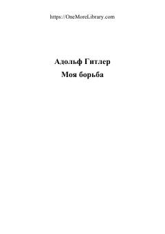

МБAdolf Gitlerning siyosiy qarashlari va avtobiografik xotiralari jamlangan asar.
Ushbu asar Adolf Gitlerning Landsberg qamoqxonasida yozilgan siyosiy manifesti va avtobiografik xotiralaridir. Kitobda muallifning dunyoqarashi, milliy-sotsialistik g'oyalari va Germaniyaning o'sha davrdagi siyosiy vaziyati haqidagi qarashlari bayon etilgan.